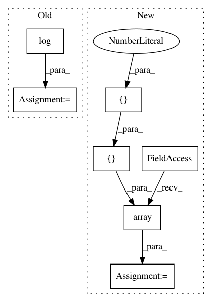

01673d1a6dcb41a20e19f951ee450c44c07aeafd,geomstats/riemannian_metric.py,RiemannianMetric,mean,#RiemannianMetric#Any#Any#Any#Any#Any#,242
Before Change
sq_dists_between_iterates = []
iteration = 0
while iteration < n_max_iterations:
a_tangent_vector = self.log(mean, mean)
tangent_mean = gs.zeros_like(a_tangent_vector)
logs = self.log(point=points, base_point=mean)
tangent_mean += gs.einsum("nk,nj->j", weights, logs)
After Change
sq_dists_between_iterates = []
iteration = 0
sq_dist = gs.array([[0.]])
variance = gs.array([[0.]])
//iteration = gs.constant(0)
In pattern: SUPERPATTERN
Frequency: 3
Non-data size: 7
Instances
Project Name: geomstats/geomstats
Commit Name: 01673d1a6dcb41a20e19f951ee450c44c07aeafd
Time: 2019-06-16
Author: ninamio78@gmail.com
File Name: geomstats/riemannian_metric.py
Class Name: RiemannianMetric
Method Name: mean
Project Name: geomstats/geomstats
Commit Name: dccb5015ca3443c490aa4f1100892b0bfb5f957b
Time: 2018-12-31
Author: ninamio78@gmail.com
File Name: geomstats/riemannian_metric.py
Class Name: RiemannianMetric
Method Name: mean
Project Name: geomstats/geomstats
Commit Name: a2a27d68e82fad8512f73d0c9fc39d87808bb7ed
Time: 2020-04-21
Author: nicolas.guigui@inria.fr
File Name: tests/test_special_orthogonal.py
Class Name: TestSpecialOrthogonalMethods
Method Name: test_to_tangent